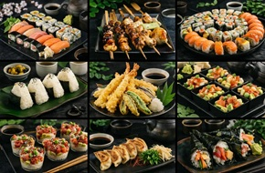
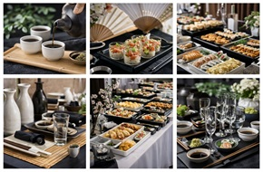

Catering
Yoko's Kitchen offers catering services for events, parties, and special occasions. Enjoy authentic Japanese dishes prepared with fresh ingredients and attention to detail.

Yoko's Kitchen offers catering services for events, parties, and special occasions. Enjoy authentic Japanese dishes prepared with fresh ingredients and attention to detail.

Contact us to plan your perfect event.